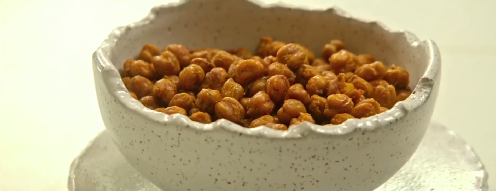
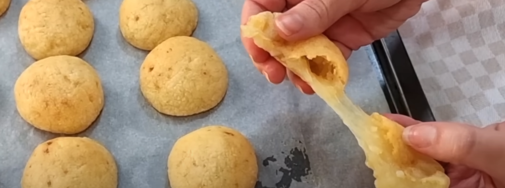

Grão de bico
É um alimento versátil e nutritivo que pode ser incorporado em uma variedade de receitas, incluindo
lanches. Quando assado, ele se torna crocante e adquire um sabor
ligeiramente torrado que o torna uma opção perfeita para um snack saudável. Além disso, é rico
em proteínas e fibras, tornando-o uma escolha ideal para aqueles que procuram manter-se saciados
entre as refeições. Neste guia, vamos mostrar como preparar grão-de-bico assado que será o seu
novo snack favorito. É fácil, rápido e delicioso! Vamos começar!
Saiba mais
O grão-de-bico é um alimento versátil e nutritivo que pode ser incluído em uma variedade de
receitas, incluindo saladas. É fácil de preparar, rico em proteínas e fibras e pode ser usado em
pratos quentes ou frios. Transformar o grão-de-bico em uma salada é uma ótima maneira de incluí-lo
em sua alimentação de uma forma simples e deliciosa. Além disso, é uma opção ideal para quem procura
uma refeição leve e saudável. Nesta receita, vamos mostrar como transformar grão-de-bico em uma
salada em questão de minutos, sem comprometer o sabor e a nutrição. Vamos começar!
Saiba mais
O crostini de tapioca
é uma opção deliciosa e sem glúten para aperitivos. A tapioca é uma fonte
natural de amido e, quando assada, se transforma em um cracker crocante e ligeiramente crocante.
Além disso, a tapioca é versátil e pode ser temperada de várias maneiras para atender aos seus
gostos pessoais. Neste guia, vamos mostrar como preparar crostini de tapioca crocante que será a
escolha perfeita para acompanhar suas receitas de entradas ou para ser um lanche saudável. É fácil,
rápido e sem glúten! Vamos começar!
Saiba mais
Salada de Macarrão
Você está procurando uma receita saudável, fácil e saborosa para incluir no seu cardápio diário?
Então experimente o Macarrão Integral com Molho de Iogurte! Esta receita é feita com macarrão
integral, um alimento rico em fibras e nutrientes, e combinado com o molho de iogurte, que é uma
opção light e nutritiva para o seu molho de salada. Além disso, essa receita é fácil de preparar e
pode ser personalizada com os ingredientes que você mais gosta. Então, o que você está esperando?
Experimente essa receita incrível e adicione mais saúde e sabor à sua dieta!
Saiba mais

Pão de Queijo Saudável
Quem não ama um pão de queijo quentinho e cheio de sabor? Infelizmente, a maioria das receitas
tradicionais contêm glúten e muito queijo. Mas, não precisa abrir mão do sabor para uma alimentação
saudável. Neste texto, apresentaremos uma receita de pão de queijo saudável, que combina
ingredientes nutritivos e ainda é uma opção sem glúten. Além disso, você vai se surpreender com o
quanto essa receita é fácil de ser feliz.
Saiba mais